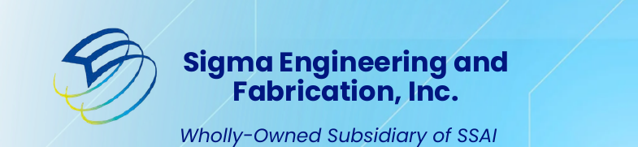
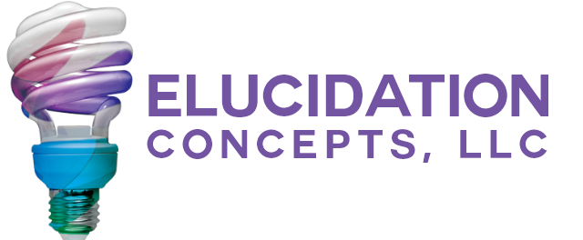
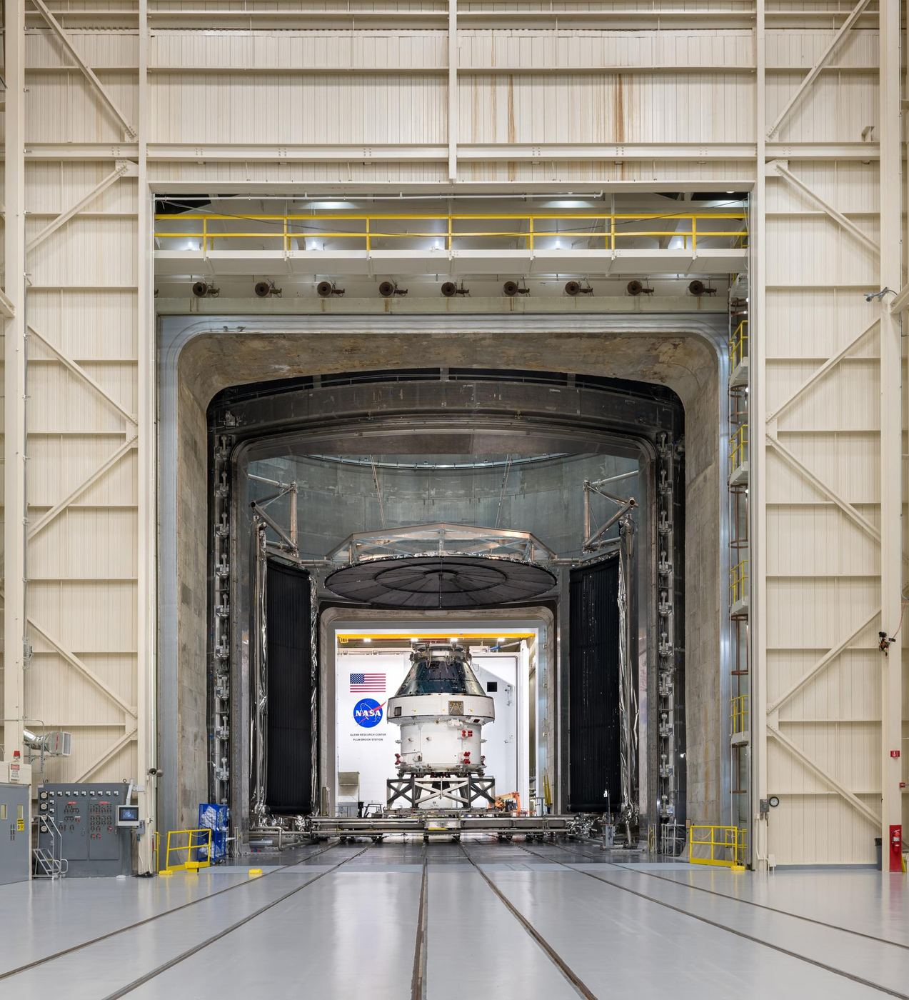

A family of companies that extends the mission.
SSAI delivers through three wholly-owned subsidiaries that build the flight hardware, machine the precision parts, and engineer the integration and test the mission depends on. Together they give the agencies we serve one accountable source for capability, from a circuit card to a fully verified system.
Three companies, one commitment.
Each of our subsidiaries holds a distinct discipline. Together they let SSAI carry a mission from concept to delivered hardware without leaving the family.
Advanced Mission Partners manufactures the electronics. Sigma Engineering & Fabrication machines and prints the precision parts. Elucidation Concepts engineers, integrates, tests, and secures the system. We bring those capabilities under one roof so customers contract once and hold one team accountable for the result.
Advanced Mission Partners.
Precision, Innovation & Dedication. Every Mission, Every Time.
Advanced Mission Partners builds the electronics the mission runs on. From a 32,000 square foot manufacturing floor, the team delivers circuit card assembly, electronics manufacturing, and precision build-to-print hardware for the most demanding programs.
Customers include Boeing and Northrop Grumman, and the work meets the standards flight-grade hardware demands: built right the first time, and every time.
 NASA / Goddard Space Flight Center
NASA / Goddard Space Flight Center
Sigma Engineering & Fabrication.

Mil-spec precision, machined and printed to the mission's tolerance.
Sigma Engineering & Fabrication delivers mil-spec CNC machining to tolerances of 0.0005 inch, the precision that flight and defense hardware require when there is no margin for error.
The shop pairs subtractive machining with additive manufacturing across resin, ceramic, and FDM, so a part can be prototyped, refined, and produced under one roof. From a single specimen to a production run, Sigma builds it to spec.
 NASA / Goddard Space Flight Center
NASA / Goddard Space Flight Center
Elucidation Concepts.

Bring clarity to your vision.
Elucidation Concepts engineers the system around the hardware. The team delivers systems engineering, integration and test, test and evaluation, and cybersecurity for programs where the requirement is to prove the system works before it flies.
From requirements through verified delivery, Elucidation Concepts brings the discipline that turns a design into a system the mission can trust.

NASA / Goddard Space Flight CenterWholly-owned, fully accountable
Advanced Mission Partners, Sigma Engineering & Fabrication, and Elucidation Concepts are all wholly-owned subsidiaries of Science Systems and Applications, Inc. One ownership structure, one quality standard, and one team accountable for every mission they support.
One family, one accountable source.
Contract with SSAI and you reach the full capability of our family of companies, from flight electronics to precision parts to verified, secured systems. See the vehicles and the path to put us on contract.